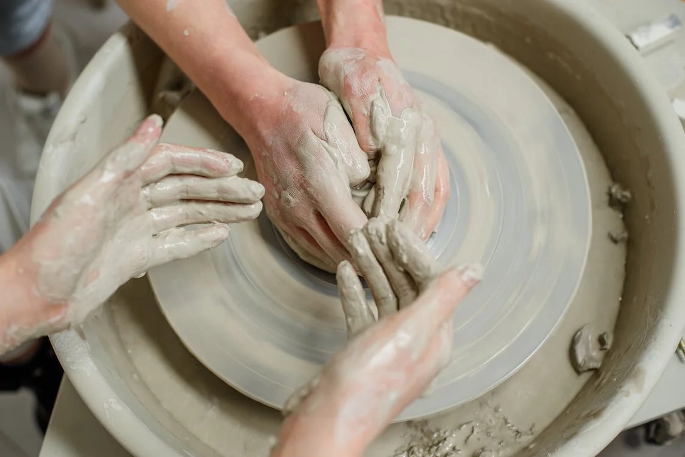
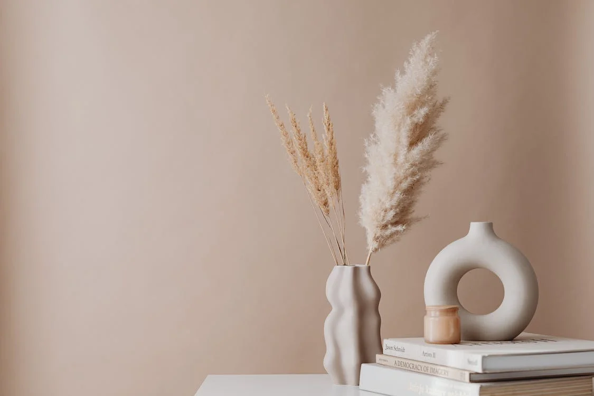

¡CON LAS MANOS EN LA MASA!
Un espacio que respira arte, compañerismo, artesanía y calidad.Ceramistas artesana que sigue la tradición de la alfarería y la escultura cerámica para acercarla a nuestros tiempos.Formada académicamente en la Escuela superior de arte y diseño de Castellón y con una amplia trayectoria profesional.
TALLERES
Llevo con las manos en la masa más de 5 años y quiero darte el espacio y el conocimiento suficiente para crear tus propias piezas cerámicas
Por el momento no hay talleres disponibles pero iremos subiendo las novedades
PRODUCTOS
Productos artesanos, que reflejan el amor y el esmero con el que se han creado.
Calidad, a precios increibles. Apoya a tus artistas y artesanos locales mientras decoras tu cocina con jarrones y vajillas increibles.
Copyright 2023.